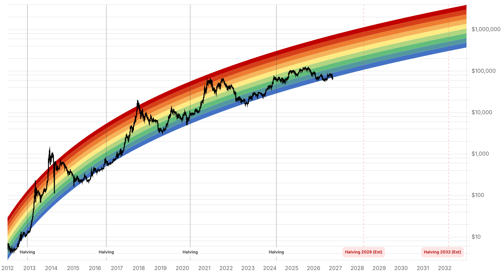

Reporte financiero
BTC cotiza en vivo a USD 63.560,29 (07:19 UTC), +0,91% vs. el cierre previo de USD 62.987,29 -frente al precio en vivo de ayer (USD 64.668,94), el cambio es de -1,71%, la primera baja día a día tras cuatro sesiones de pausa-. El Fear & Greed Index bajó a 10 ('Extreme Fear', venía de 11 ayer), profundizando levemente en el mismo rango de miedo extremo que acumula varias semanas. La novedad más relevante del día es un giro macro: las probabilidades de mercado para la reunión de la Fed del 9 de diciembre se invirtieron desde una expectativa de RECORTE (89,7% el 13-nov, dato citado en el reporte de ayer) hacia una expectativa de ALZA de 25 puntos básicos -un snapshot de mercados de predicción (promedio Kalshi/Polymarket) tomado el 19 de noviembre a las 02:13 ET ubica la probabilidad de un alza de 25pb en 92% (mantener ~3%, recortar ~2%), consistente con otras lecturas de los últimos días (CME FedWatch 14-nov: 88,5% de probabilidad de alza de 25pb y 11,5% de alza de 50pb) -las cifras exactas varían algo según la fuente y el día (rango 77%-98% en distintos snapshots de la semana), pero todas apuntan en la misma dirección: hacia un alza, no un recorte-. Esto es un cambio de régimen macro relevante para el apetito de riesgo cripto. La segunda novedad confirmada es que MSCI anunció el 12 de noviembre que Strategy (MSTR) será eliminada de los índices MSCI USA, World y ACWI, efectivo al cierre del 30 de noviembre, bajo una nueva regla de 'compañía no operativa' (primera aplicación de esta regla, adoptada en octubre) -junto con Metaplanet y Upexi, con Sharplink en lista de observación-. JPMorgan había estimado, sobre una propuesta ANTERIOR (no la regla final ya aplicada), un impacto de venta pasiva de ~USD 2.800M; MSCI no publicó una cifra propia, y Strategy ya había señalado en una carta de agosto que la exclusión 'no tendría un impacto significativo' en su negocio -la remoción no fuerza la venta de bitcoin ni deslista la acción de Nasdaq, pero sí elimina un canal de demanda pasiva (fondos que replican estos índices tenían ~3,1% de las acciones básicas en circulación de Strategy)-. Tercera novedad: la junta de Nvidia creó el 17 de noviembre un comité permanente de Seguridad Nacional y Control de Exportaciones (presidido por la directora Suzanne Nora Johnson, con Stephen C. Neal y John O. Dabiri como miembros), que supervisa el cumplimiento de controles de exportación y reporta a la CEO interina Colette Kress -se reporta que el Secretario del Tesoro, Scott Bessent, pidió respuestas a la junta dentro de 10 días-. Sobre flujos de ETFs de bitcoin: NO fue posible verificar con confianza cifras diarias para el 17 y 18 de noviembre -varias fuentes encontradas en la búsqueda resultaron, al verificarlas directamente, estar fechadas en noviembre de 2025 (no 2026) y citar precios de BTC incompatibles con el nivel actual (ej. USD 89.000-111.000), por lo que se descartan explícitamente en vez de usarlas-; el último dato verificado con fecha 2026 confiable sigue siendo el flujo neto positivo de USD 8,0M del lunes 16 de noviembre ya reportado ayer. No hay novedades verificables sobre la Clarity Act (sigue estancada en el Senado tras no alcanzar los 60 votos de cloture), BTCPay Server, la apelación del Reino Unido sobre los 61.000 BTC, Cantor Fitzgerald, ni el reclamo no verificado sobre Irán.
El precio en vivo de BTC-USD (Yahoo Finance, 07:19 UTC) es de USD 63.560,29, +0,91% vs. el cierre previo de USD 62.987,29 (rango del día: USD 62.382,48 a USD 63.692,36). Frente al precio en vivo de ayer (USD 64.668,94), el cambio es de -1,71% -la primera baja día a día tras cuatro sesiones consecutivas sin movimiento brusco-. El Fear & Greed Index de alternative.me bajó a 10 hoy (venía de 11 ayer), sin salir de la categoría 'Extreme Fear' que acumula ya varias semanas.
El reporte de ayer citaba un 89,7% de probabilidad de un RECORTE de 25pb el 9 de diciembre (dato del 13-nov, CME FedWatch). Esa lectura se invirtió por completo: un snapshot de mercados de predicción (promedio Kalshi/Polymarket, agregador defirate.com) tomado el 19-nov a las 02:13 ET ubica la probabilidad de un ALZA de 25pb en 92% (mantener ~3%, recortar ~2%). Lecturas intermedias de los días previos muestran la misma tendencia: CME FedWatch del 14-nov asignaba 88,5% a un alza de 25pb y 11,5% a una de 50pb, con Bitcoin cotizando ese día cerca de USD 65.020 (nivel consistente con el rango actual, a diferencia de cifras de otras fuentes que resultaron ser de 2025). El detonante reportado es una combinación de datos de empleo e inflación (PPI) más calientes de lo esperado en las últimas semanas. El analista Iggy Ioppe (CIO de Theo) resumió el cambio de tono: 'Markets had the hold priced, but not the hawkish tone' -ver cita completa en opiniones de expertos-. Este viraje es el desarrollo macro más relevante desde el reporte de ayer y un cambio de régimen para el apetito de riesgo de activos como bitcoin.
MSCI anunció el 12 de noviembre que Strategy será eliminada de los índices MSCI USA, World y ACWI al cierre del 30 de noviembre, bajo la nueva regla de 'compañía no operativa' que MSCI adoptó en octubre -la regla no menciona bitcoin explícitamente: evalúa si los activos operativos de una empresa superan el 50% de sus activos totales y, si no, aplica una prueba de cinco ratios financieros; Strategy falló esa prueba-. En la misma revisión también se elimina a Metaplanet y Upexi, con Sharplink en lista de observación. JPMorgan había estimado en una propuesta anterior de MSCI (no la regla final ya aplicada) un impacto de venta pasiva de ~USD 2.800M; MSCI no publicó una cifra propia, y Strategy señaló en una carta de agosto que fondos que replican los índices globales de MSCI tenían ~3,1% de sus acciones básicas en circulación, y que la exclusión 'no tendría un impacto significativo en el negocio de Strategy'. La remoción no deslista la acción de Nasdaq ni obliga a vender bitcoin, pero sí elimina un canal de demanda pasiva de MSTR -esto resuelve el riesgo que el reporte de ayer dejaba como 'tema abierto a monitorear'.
El 17 de noviembre, un día después de confirmar que no reinstalaría a Jensen Huang como CEO (ya reportado ayer), la junta de Nvidia anunció la creación de un comité permanente de Seguridad Nacional y Control de Exportaciones, presidido por la directora Suzanne Nora Johnson (ex vicepresidenta de Goldman Sachs, incorporada a la junta en julio de 2026), con Stephen C. Neal y John O. Dabiri como miembros. El comité supervisará el cumplimiento de controles de exportación, riesgos de comercio global y seguridad nacional, se reunirá al menos trimestralmente, podrá contratar expertos externos, y los equipos de Seguridad Nacional y Cumplimiento de Comercio Global de la empresa pasan a reportarle (además de a la CEO interina Colette Kress). Según reportes, el Secretario del Tesoro de EE.UU., Scott Bessent, había pedido respuestas a la junta dentro de 10 días. Un analista citado en prensa lo calificó principalmente como una señal hacia reguladores más que un cambio sustantivo. Dada la correlación de 0,67 entre BTC y el Nasdaq señalada ayer, la gobernanza de Nvidia sigue siendo un factor de sentimiento tecnológico a monitorear.
La investigación de hoy no logró verificar con confianza cifras de flujos diarios de ETFs de bitcoin para el 17 y 18 de noviembre: varias fuentes encontradas, al verificarlas directamente, resultaron estar fechadas en noviembre de 2025 (no 2026) y citar precios de BTC (USD 89.000-111.000) incompatibles con el nivel actual del activo -se descartan explícitamente en vez de reportarlas como si fueran de hoy-. El último dato de flujos con fecha 2026 confirmada sigue siendo el flujo neto positivo de USD 8,0M del lunes 16 de noviembre, ya reportado ayer. Tampoco hay información nueva y confiable sobre la Clarity Act (sigue estancada en el Senado, sin alcanzar los 60 votos de cloture), BTCPay Server, la apelación del Reino Unido sobre los 61.000 BTC, Cantor Fitzgerald, ni el reclamo no verificado sobre un ataque a un radar en Baréin mencionado en ediciones anteriores.
| Periodo | Valor |
|---|---|
| 13 nov | 68249.27 |
| 14 nov | 64128.05 |
| 15 nov | 65305.06 |
| 16 nov | 64855.84 |
| 17 nov | 64893.95 |
| 18 nov | 62987.27 |
| 19 nov (en vivo) | 63560.29 |
| Periodo | Valor |
|---|---|
| Hoy | 10 |

“Markets had the hold priced, but not the hawkish tone.”
“Bitcoin's near-term performance may depend more heavily on Treasury yields.”
El precio retrocede levemente (-1,71% en vivo frente a ayer) tras cuatro días de pausa, y el Fear & Greed Index profundiza un punto en 'Extreme Fear' (10 vs. 11). El catalizador de corto plazo dominante es el giro de las probabilidades de la Fed de 'recorte' a 'alza' de 25pb para el 9 de diciembre (92% según el snapshot más reciente) -un cambio de régimen que, dada la correlación de 0,67 entre BTC y el Nasdaq señalada ayer, presiona el apetito de riesgo cripto en el margen, aunque el precio spot todavía no muestra una reacción violenta.
La eliminación confirmada de Strategy (MSTR) de los índices MSCI al cierre del 30 de noviembre retira un canal de demanda pasiva relevante para la acción, aunque no fuerza venta de bitcoin ni deslistado -el mercado deberá digerir ese rebalanceo en las próximas dos semanas. Los flujos de ETFs de bitcoin para el 17-18 de noviembre quedan sin verificar de forma confiable hoy; el último dato confirmado (flujo neto positivo de USD 8,0M el 16-nov) sigue siendo insuficiente para hablar de una reversión de tendencia.
Sin cambios en los objetivos de precio de largo plazo ya reportados en ediciones anteriores (Citigroup, Bernstein, Standard Chartered, Tom Lee, NYDIG, Armstrong, piso de costo de producción de JPMorgan en USD 94.000). Con el precio spot actual en USD 63.560,29, BTC se mantiene muy por debajo de ese piso de costo de producción, en línea con la brecha ya señalada en ediciones anteriores. El viraje de la Fed hacia una postura más restrictiva (alza en vez de recorte en diciembre) es un nuevo elemento macro que podría extender esa brecha si se confirma en las próximas semanas.
El cambio desde ~90% de probabilidad de recorte (13-nov) a ~92% de probabilidad de alza (19-nov) es el movimiento macro más grande entre reportes consecutivos de esta serie. Un alza confirmada de tasas el 9 de diciembre endurecería las condiciones financieras para activos de riesgo como bitcoin; vigilar datos de empleo e inflación de las próximas semanas, que son el principal insumo de este cambio.
La venta pasiva de fondos que replican los índices MSCI (~3,1% de las acciones básicas en circulación de Strategy) se concentrará en las próximas dos semanas. Aunque no implica venta forzada de bitcoin, puede generar volatilidad en MSTR con posible contagio indirecto a bitcoin dado el tamaño de sus tenencias (850.849 BTC).
Varias fuentes de prensa sobre flujos de ETFs de bitcoin circulando hoy correspondían, al verificarlas, a noviembre de 2025 y no a 2026. Antes de operar sobre una cifra de flujo diario, confirmar que la fuente esté fechada en el año correcto y sea consistente con el nivel de precio actual.